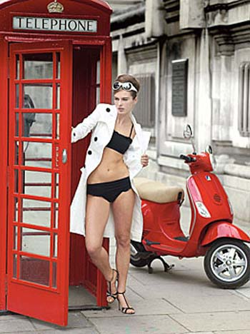

Bikini i Vespa
Bikini i vespa zajedno, to dođe kao kafa sa šećerom, šlagom i sladoledom, odozgo još i sirup od maline i narendana čokolada. Previše. A opet ne možeš baš da se zakuneš da je loše.E sad, bikini i vespa su ovde zajedno zato što i jedno i drugo ovog proleća slave šezdeset godina postojanja.
Malo li je?
 Štampa širom sveta puna je nekog ushićenja objašnjavajući kako su i jedno i drugo dobri. Mada tu reči stvarno i nisu potrebne.
Ima i knjiga (neka bivša manekenka u Americi koja je postala kao novinarka napisala knjigu o bikiniju - ona ipak zna najbolje, a Italijani su štampali knjige o Vespi, ima i neka studija gde je i Umberto Eko doprineo).
Neke od izjava su: Suština vespe je to da ona ima dušu. Onda, trajna nacionalna (italijanska) ljubav prema Vespi vezana je delom za njen jednostavan ali estetički prijatan dizajn. Ili: Vespa je simbol slatkog života, kada je mladim Italijanima, nakon fašizma, dala slobodu da lako odu van grada ili na more. Takodje, uspeh Vespe leži i u tome što su je žene doživele kao dovoljno komfornu, te se smatra sredstvom emancipacije i zavođenja.
Rimljanke u letnje jutro u poslovnim odelima, sa kacigama i na Vespama koje usput svraćaju u kafe na doručak i kapućino, deluju totalno filmično fantastično, dodajem.
Imidž Vespe ojačan je tokom 50ih i 60ih kada su se pin-up girls slikale na njima. U bikinijima.
To be precise, u bikinijima kakvi su tad postojali. Jer, oni su se s vremenom smanjivali, i smanjivali, i smanjivali.
Što se Vespe tiče, ona je mega popularisana filmom 'Praznik u Rimu'.
[in a taxi in Rome; Princess Ann is drugged]
Joe Bradley: Where do you live?
Princess Ann: [mumbles drunkenly] ... Colosseum...
Joe Bradley: [to taxi driver] She lives in the Colosseum.
Cab Driver: Is wrong address!
Odri Hepbern je the one and only, ali 'today, in cities around the globe, men and women hop on their Vespas hoping to capture just a fraction of that Italian sophistication.'
Što se bikinija tiče, nekrunisane carice su Brižit Bardo, Ursula Anders, Rakel Velč i Hale Beri. Tako tvrde.
Komentari
Brižit Bardo, omg! I Hale Beri aussie! Veliki sam ljubitelj žena.
Jada iz Eleja | 04.06.06 03:02
Fenomenalno! Kako samo ovaj Ubipacijentic nalazi zanimljivosti poput ove?
Jada iz Eleja | 05.06.06 07:35
Ovi bikiniji su kao kod ove cice u UK
La Lara | 05.06.06 09:25
Pomaze kad znas sta trazis - ovi mozaici su bas poznati, ima ih u gomili knjiga, itd. (Vidi link na stranici, zanimljivo je...)
 ubipacijentic | 05.06.06 15:05
ubipacijentic | 05.06.06 15:05
Ma skapirala sam da si znao za mozaik ranije ali kako ja npr ne znam za nesto ovako?
F-Kit | 06.06.06 02:54
 RSS feed
RSS feed
 sadržaji se objavljuju pod
sadržaji se objavljuju pod
Rimljanke su imale bikine, samo su čekale na Vespu :) :
http://sights.seindal.dk/photo/5134,s477f.html